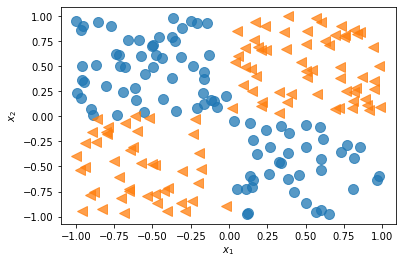
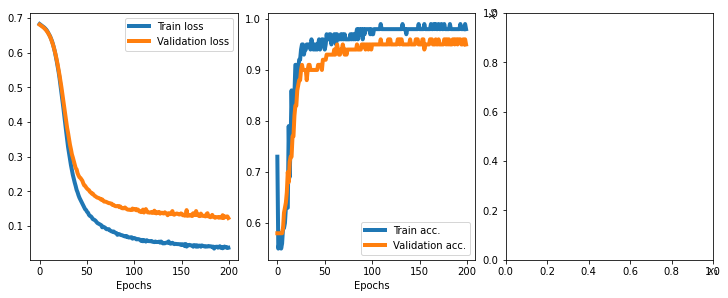
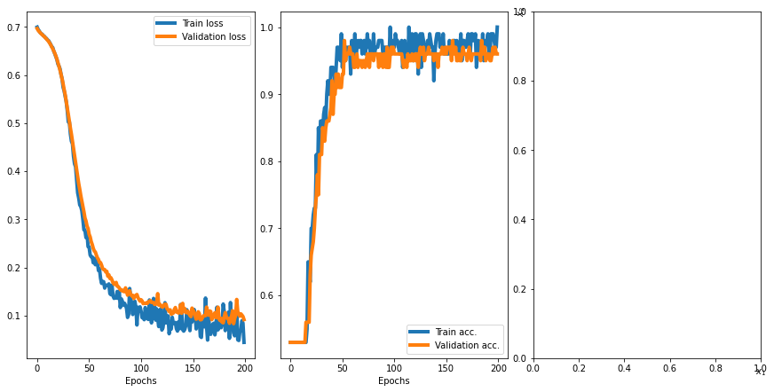

Going Deeper – the Mechanics of PyTorch
Contents
Going Deeper – the Mechanics of PyTorch¶
import matplotlib.pyplot as plt
import numpy as np
import pandas as pd
from IPython.display import Image
The key features of PyTorch¶
PyTorch’s computation graphs¶
Understanding computation graphs¶
Image(filename='figures/13_01.png', width=400)
Creating a graph in PyTorch¶
import torch
def compute_z(a, b, c):
r1 = torch.sub(a, b)
r2 = torch.mul(r1, 2)
z = torch.add(r2, c)
return z
print('Scalar Inputs:',
compute_z(torch.tensor(1), torch.tensor(2), torch.tensor(3)))
print('Rank 1 Inputs:',
compute_z(torch.tensor([1]), torch.tensor([2]), torch.tensor([3])))
print('Rank 2 Inputs:',
compute_z(torch.tensor([[1]]), torch.tensor([[2]]), torch.tensor([[3]])))
Scalar Inputs: tensor(1)
Rank 1 Inputs: tensor([1])
Rank 2 Inputs: tensor([[1]])
PyTorch Tensor objects for storing and updating model parameters¶
a = torch.tensor(3.14, requires_grad=True)
b = torch.tensor([1.0, 2.0, 3.0], requires_grad=True)
print(a)
print(b)
tensor(3.1400, requires_grad=True)
tensor([1., 2., 3.], requires_grad=True)
a.requires_grad
True
w = torch.tensor([1.0, 2.0, 3.0])
print(w.requires_grad)
False
w.requires_grad_()
print(w.requires_grad)
True
import torch.nn as nn
torch.manual_seed(1)
w = torch.empty(2, 3)
nn.init.xavier_normal_(w)
print(w)
tensor([[ 0.4183, 0.1688, 0.0390],
[ 0.3930, -0.2858, -0.1051]])
class MyModule(nn.Module):
def __init__(self):
super().__init__()
self.w1 = torch.empty(2, 3, requires_grad=True)
nn.init.xavier_normal_(self.w1)
self.w2 = torch.empty(1, 2, requires_grad=True)
nn.init.xavier_normal_(self.w2)
Computing gradients via automatic differentiation and GradientTape¶
Computing the gradients of the loss with respect to trainable variables¶
w = torch.tensor(1.0, requires_grad=True)
b = torch.tensor(0.5, requires_grad=True)
x = torch.tensor([1.4])
y = torch.tensor([2.1])
z = torch.add(torch.mul(w, x), b)
loss = (y - z).pow(2).sum()
loss.backward()
print('dL/dw : ', w.grad)
print('dL/db : ', b.grad)
dL/dw : tensor(-0.5600)
dL/db : tensor(-0.4000)
# verifying the computed gradient dL/dw
print(2 * x * ((w * x + b) - y))
tensor([-0.5600], grad_fn=<MulBackward0>)
Simplifying implementations of common architectures via the torch.nn module¶
Implementing models based on nn.Sequential¶
model = nn.Sequential(nn.Linear(4, 16), nn.ReLU(), nn.Linear(16, 32),
nn.ReLU())
model
Sequential(
(0): Linear(in_features=4, out_features=16, bias=True)
(1): ReLU()
(2): Linear(in_features=16, out_features=32, bias=True)
(3): ReLU()
)
Configuring layers¶
Initializers
nn.init: https://pytorch.org/docs/stable/nn.init.htmlL1 Regularizers
nn.L1Loss: https://pytorch.org/docs/stable/generated/torch.nn.L1Loss.html#torch.nn.L1LossL2 Regularizers
weight_decay: https://pytorch.org/docs/stable/optim.htmlActivations: https://pytorch.org/docs/stable/nn.html#non-linear-activations-weighted-sum-nonlinearity
nn.init.xavier_uniform_(model[0].weight)
l1_weight = 0.01
l1_penalty = l1_weight * model[2].weight.abs().sum()
Compiling a model¶
Optimizers
torch.optim: https://pytorch.org/docs/stable/optim.html#algorithmsLoss Functins
tf.keras.losses: https://pytorch.org/docs/stable/nn.html#loss-functions
loss_fn = nn.BCELoss()
optimizer = torch.optim.SGD(model.parameters(), lr=0.001)
Solving an XOR classification problem¶
np.random.seed(1)
torch.manual_seed(1)
x = np.random.uniform(low=-1, high=1, size=(200, 2))
y = np.ones(len(x))
y[x[:, 0] * x[:, 1] < 0] = 0
n_train = 100
x_train = torch.tensor(x[:n_train, :], dtype=torch.float32)
y_train = torch.tensor(y[:n_train], dtype=torch.float32)
x_valid = torch.tensor(x[n_train:, :], dtype=torch.float32)
y_valid = torch.tensor(y[n_train:], dtype=torch.float32)
_, ax = plt.subplots(figsize=(6, 4))
ax.plot(x[y == 0, 0], x[y == 0, 1], 'o', alpha=0.75, markersize=10)
ax.plot(x[y == 1, 0], x[y == 1, 1], '<', alpha=0.75, markersize=10)
ax.set_xlabel(r'$x_1$', size=15)
ax.set_ylabel(r'$x_2$', size=15)
plt.show()

from torch.utils.data import DataLoader, TensorDataset
train_ds = TensorDataset(x_train, y_train)
batch_size = 2
torch.manual_seed(1)
train_dl = DataLoader(train_ds, batch_size, shuffle=True)
model = nn.Sequential(nn.Linear(2, 1), nn.Sigmoid())
model
Sequential(
(0): Linear(in_features=2, out_features=1, bias=True)
(1): Sigmoid()
)
loss_fn = nn.BCELoss()
optimizer = torch.optim.SGD(model.parameters(), lr=0.001)
torch.manual_seed(1)
num_epochs = 200
def train(model, num_epochs, train_dl, x_valid, y_valid):
loss_hist_train = [0] * num_epochs
accuracy_hist_train = [0] * num_epochs
loss_hist_valid = [0] * num_epochs
accuracy_hist_valid = [0] * num_epochs
for epoch in range(num_epochs):
for x_batch, y_batch in train_dl:
pred = model(x_batch)[:, 0]
loss = loss_fn(pred, y_batch)
loss.backward()
optimizer.step()
optimizer.zero_grad()
loss_hist_train[epoch] += loss.item()
is_correct = ((pred >= 0.5).float() == y_batch).float()
accuracy_hist_train[epoch] += is_correct.mean()
loss_hist_train[epoch] /= n_train / batch_size
accuracy_hist_train[epoch] /= n_train / batch_size
pred = model(x_valid)[:, 0]
loss = loss_fn(pred, y_valid)
loss_hist_valid[epoch] = loss.item()
is_correct = ((pred >= 0.5).float() == y_valid).float()
accuracy_hist_valid[epoch] += is_correct.mean()
return loss_hist_train, loss_hist_valid, accuracy_hist_train, accuracy_hist_valid
history = train(model, num_epochs, train_dl, x_valid, y_valid)
_, axes = plt.subplots(1, 2, figsize=(10, 4), constrained_layout=True)
axes[0].plot(history[0], lw=4)
axes[0].plot(history[1], lw=4)
axes[0].legend(['Train loss', 'Validation loss'], fontsize=15)
axes[0].set_xlabel('Epochs', size=15)
axes[1].plot(history[2], lw=4)
axes[1].plot(history[3], lw=4)
axes[1].legend(['Train acc.', 'Validation acc.'], fontsize=15)
axes[1].set_xlabel('Epochs', size=15)
Text(0.5, 0, 'Epochs')
model = nn.Sequential(nn.Linear(2, 4), nn.ReLU(), nn.Linear(4, 4), nn.ReLU(),
nn.Linear(4, 1), nn.Sigmoid())
loss_fn = nn.BCELoss()
optimizer = torch.optim.SGD(model.parameters(), lr=0.015)
model
Sequential(
(0): Linear(in_features=2, out_features=4, bias=True)
(1): ReLU()
(2): Linear(in_features=4, out_features=4, bias=True)
(3): ReLU()
(4): Linear(in_features=4, out_features=1, bias=True)
(5): Sigmoid()
)
history = train(model, num_epochs, train_dl, x_valid, y_valid)
_, axes = plt.subplots(1, 2, figsize=(10, 4), constrained_layout=True)
axes[0].plot(history[0], lw=4)
axes[0].plot(history[1], lw=4)
axes[0].legend(['Train loss', 'Validation loss'], fontsize=15)
axes[0].set_xlabel('Epochs', size=15)
axes[1].plot(history[2], lw=4)
axes[1].plot(history[3], lw=4)
axes[1].legend(['Train acc.', 'Validation acc.'], fontsize=15)
axes[1].set_xlabel('Epochs', size=15)
Text(0.5, 0, 'Epochs')
Making model building more flexible with nn.Module¶
class MyModule(nn.Module):
def __init__(self):
super().__init__()
l1 = nn.Linear(2, 4)
a1 = nn.ReLU()
l2 = nn.Linear(4, 4)
a2 = nn.ReLU()
l3 = nn.Linear(4, 1)
a3 = nn.Sigmoid()
l = [l1, a1, l2, a2, l3, a3]
self.module_list = nn.ModuleList(l)
def forward(self, x):
for f in self.module_list:
x = f(x)
return x
def predict(self, x):
x = torch.tensor(x, dtype=torch.float32)
pred = self.forward(x)[:, 0]
return (pred >= 0.5).float()
model = MyModule()
model
MyModule(
(module_list): ModuleList(
(0): Linear(in_features=2, out_features=4, bias=True)
(1): ReLU()
(2): Linear(in_features=4, out_features=4, bias=True)
(3): ReLU()
(4): Linear(in_features=4, out_features=1, bias=True)
(5): Sigmoid()
)
)
loss_fn = nn.BCELoss()
optimizer = torch.optim.SGD(model.parameters(), lr=0.015)
# torch.manual_seed(1)
history = train(model, num_epochs, train_dl, x_valid, y_valid)
from mlxtend.plotting import plot_decision_regions
_, axes = plt.subplots(1, 3, figsize=(10, 4), constrained_layout=True)
axes[0].plot(history[0], lw=4)
axes[0].plot(history[1], lw=4)
axes[0].legend(['Train loss', 'Validation loss'], fontsize=15)
axes[0].set_xlabel('Epochs', size=15)
axes[1].plot(history[2], lw=4)
axes[1].plot(history[3], lw=4)
axes[1].legend(['Train acc.', 'Validation acc.'], fontsize=15)
axes[1].set_xlabel('Epochs', size=15)
plot_decision_regions(X=x_valid.numpy(),
y=y_valid.numpy().astype(np.int64),
clf=model,
ax=ax)
axes[2].set_xlabel(r'$x_1$', size=15)
axes[2].xaxis.set_label_coords(1, -0.025)
axes[2].set_ylabel(r'$x_2$', size=15)
axes[2].yaxis.set_label_coords(-0.025, 1)
plt.show()

Writing custom layers in PyTorch¶
class NoisyLinear(nn.Module):
def __init__(self, input_size, output_size, noise_stddev=0.1):
super().__init__()
w = torch.Tensor(input_size, output_size)
self.w = nn.Parameter(
w) # nn.Parameter is a Tensor that's a module parameter.
nn.init.xavier_uniform_(self.w)
b = torch.Tensor(output_size).fill_(0)
self.b = nn.Parameter(b)
self.noise_stddev = noise_stddev
def forward(self, x, training=False):
if training:
noise = torch.normal(0.0, self.noise_stddev, x.shape)
x_new = torch.add(x, noise)
else:
x_new = x
return torch.add(torch.mm(x_new, self.w), self.b)
## testing:
torch.manual_seed(1)
noisy_layer = NoisyLinear(4, 2)
x = torch.zeros((1, 4))
print(noisy_layer(x, training=True))
print(noisy_layer(x, training=True))
print(noisy_layer(x, training=False))
tensor([[ 0.1154, -0.0598]], grad_fn=<AddBackward0>)
tensor([[ 0.0432, -0.0375]], grad_fn=<AddBackward0>)
tensor([[0., 0.]], grad_fn=<AddBackward0>)
class MyNoisyModule(nn.Module):
def __init__(self):
super().__init__()
self.l1 = NoisyLinear(2, 4, 0.07)
self.a1 = nn.ReLU()
self.l2 = nn.Linear(4, 4)
self.a2 = nn.ReLU()
self.l3 = nn.Linear(4, 1)
self.a3 = nn.Sigmoid()
def forward(self, x, training=False):
x = self.l1(x, training)
x = self.a1(x)
x = self.l2(x)
x = self.a2(x)
x = self.l3(x)
x = self.a3(x)
return x
def predict(self, x):
x = torch.tensor(x, dtype=torch.float32)
pred = self.forward(x)[:, 0]
return (pred >= 0.5).float()
torch.manual_seed(1)
model = MyNoisyModule()
model
MyNoisyModule(
(l1): NoisyLinear()
(a1): ReLU()
(l2): Linear(in_features=4, out_features=4, bias=True)
(a2): ReLU()
(l3): Linear(in_features=4, out_features=1, bias=True)
(a3): Sigmoid()
)
loss_fn = nn.BCELoss()
optimizer = torch.optim.SGD(model.parameters(), lr=0.015)
torch.manual_seed(1)
loss_hist_train = [0] * num_epochs
accuracy_hist_train = [0] * num_epochs
loss_hist_valid = [0] * num_epochs
accuracy_hist_valid = [0] * num_epochs
for epoch in range(num_epochs):
for x_batch, y_batch in train_dl:
pred = model(x_batch, True)[:, 0]
loss = loss_fn(pred, y_batch)
loss.backward()
optimizer.step()
optimizer.zero_grad()
loss_hist_train[epoch] += loss.item()
is_correct = ((pred >= 0.5).float() == y_batch).float()
accuracy_hist_train[epoch] += is_correct.mean()
loss_hist_train[epoch] /= n_train / batch_size
accuracy_hist_train[epoch] /= n_train / batch_size
pred = model(x_valid)[:, 0]
loss = loss_fn(pred, y_valid)
loss_hist_valid[epoch] = loss.item()
is_correct = ((pred >= 0.5).float() == y_valid).float()
accuracy_hist_valid[epoch] += is_correct.mean()
from mlxtend.plotting import plot_decision_regions
_, axes = plt.subplots(1, 3, figsize=(12, 6), constrained_layout=True)
axes[0].plot(loss_hist_train, lw=4)
axes[0].plot(loss_hist_valid, lw=4)
axes[0].legend(['Train loss', 'Validation loss'], fontsize=15)
axes[0].set_xlabel('Epochs', size=15)
axes[1].plot(accuracy_hist_train, lw=4)
axes[1].plot(accuracy_hist_valid, lw=4)
axes[1].legend(['Train acc.', 'Validation acc.'], fontsize=15)
axes[1].set_xlabel('Epochs', size=15)
plot_decision_regions(X=x_valid.numpy(),
y=y_valid.numpy().astype(np.int64),
clf=model, ax=ax)
axes[2].set_xlabel(r'$x_1$', size=15)
axes[2].xaxis.set_label_coords(1, -0.025)
axes[2].set_ylabel(r'$x_2$', size=15)
axes[2].yaxis.set_label_coords(-0.025, 1)
plt.show()

Project one - predicting the fuel efficiency of a car¶
Working with feature columns¶
Image(filename='figures/13_07.png', width=700)
column_names = [
'MPG', 'Cylinders', 'Displacement', 'Horsepower', 'Weight', 'Acceleration',
'Model Year', 'Origin'
]
df = pd.read_csv('../../datasets/stats/auto_mpg.data',
names=column_names,
na_values="?",
comment='\t',
sep=" ",
skipinitialspace=True)
df.tail()
| MPG | Cylinders | Displacement | Horsepower | Weight | Acceleration | Model Year | Origin | |
|---|---|---|---|---|---|---|---|---|
| 393 | 27.0 | 4 | 140.0 | 86.0 | 2790.0 | 15.6 | 82 | 1 |
| 394 | 44.0 | 4 | 97.0 | 52.0 | 2130.0 | 24.6 | 82 | 2 |
| 395 | 32.0 | 4 | 135.0 | 84.0 | 2295.0 | 11.6 | 82 | 1 |
| 396 | 28.0 | 4 | 120.0 | 79.0 | 2625.0 | 18.6 | 82 | 1 |
| 397 | 31.0 | 4 | 119.0 | 82.0 | 2720.0 | 19.4 | 82 | 1 |
print(df.isna().sum())
df = df.dropna()
df = df.reset_index(drop=True)
df.tail()
MPG 0
Cylinders 0
Displacement 0
Horsepower 6
Weight 0
Acceleration 0
Model Year 0
Origin 0
dtype: int64
| MPG | Cylinders | Displacement | Horsepower | Weight | Acceleration | Model Year | Origin | |
|---|---|---|---|---|---|---|---|---|
| 387 | 27.0 | 4 | 140.0 | 86.0 | 2790.0 | 15.6 | 82 | 1 |
| 388 | 44.0 | 4 | 97.0 | 52.0 | 2130.0 | 24.6 | 82 | 2 |
| 389 | 32.0 | 4 | 135.0 | 84.0 | 2295.0 | 11.6 | 82 | 1 |
| 390 | 28.0 | 4 | 120.0 | 79.0 | 2625.0 | 18.6 | 82 | 1 |
| 391 | 31.0 | 4 | 119.0 | 82.0 | 2720.0 | 19.4 | 82 | 1 |
from sklearn.model_selection import train_test_split
df_train, df_test = train_test_split(df, train_size=0.8, random_state=1)
train_stats = df_train.describe().transpose()
train_stats
| count | mean | std | min | 25% | 50% | 75% | max | |
|---|---|---|---|---|---|---|---|---|
| MPG | 313.0 | 23.404153 | 7.666909 | 9.0 | 17.5 | 23.0 | 29.0 | 46.6 |
| Cylinders | 313.0 | 5.402556 | 1.701506 | 3.0 | 4.0 | 4.0 | 8.0 | 8.0 |
| Displacement | 313.0 | 189.512780 | 102.675646 | 68.0 | 104.0 | 140.0 | 260.0 | 455.0 |
| Horsepower | 313.0 | 102.929712 | 37.919046 | 46.0 | 75.0 | 92.0 | 120.0 | 230.0 |
| Weight | 313.0 | 2961.198083 | 848.602146 | 1613.0 | 2219.0 | 2755.0 | 3574.0 | 5140.0 |
| Acceleration | 313.0 | 15.704473 | 2.725399 | 8.5 | 14.0 | 15.5 | 17.3 | 24.8 |
| Model Year | 313.0 | 75.929712 | 3.675305 | 70.0 | 73.0 | 76.0 | 79.0 | 82.0 |
| Origin | 313.0 | 1.591054 | 0.807923 | 1.0 | 1.0 | 1.0 | 2.0 | 3.0 |
numeric_column_names = [
'Cylinders', 'Displacement', 'Horsepower', 'Weight', 'Acceleration'
]
df_train_norm, df_test_norm = df_train.copy(), df_test.copy()
for col_name in numeric_column_names:
mean = train_stats.loc[col_name, 'mean']
std = train_stats.loc[col_name, 'std']
df_train_norm.loc[:,
col_name] = (df_train_norm.loc[:, col_name] - mean) / std
df_test_norm.loc[:,
col_name] = (df_test_norm.loc[:, col_name] - mean) / std
df_train_norm.tail()
| MPG | Cylinders | Displacement | Horsepower | Weight | Acceleration | Model Year | Origin | |
|---|---|---|---|---|---|---|---|---|
| 203 | 28.0 | -0.824303 | -0.901020 | -0.736562 | -0.950031 | 0.255202 | 76 | 3 |
| 255 | 19.4 | 0.351127 | 0.413800 | -0.340982 | 0.293190 | 0.548737 | 78 | 1 |
| 72 | 13.0 | 1.526556 | 1.144256 | 0.713897 | 1.339617 | -0.625403 | 72 | 1 |
| 235 | 30.5 | -0.824303 | -0.891280 | -1.053025 | -1.072585 | 0.475353 | 77 | 1 |
| 37 | 14.0 | 1.526556 | 1.563051 | 1.636916 | 1.470420 | -1.359240 | 71 | 1 |
boundaries = torch.tensor([73, 76, 79])
v = torch.tensor(df_train_norm['Model Year'].values)
df_train_norm['Model Year Bucketed'] = torch.bucketize(v,
boundaries,
right=True)
v = torch.tensor(df_test_norm['Model Year'].values)
df_test_norm['Model Year Bucketed'] = torch.bucketize(v,
boundaries,
right=True)
numeric_column_names.append('Model Year Bucketed')
from torch.nn.functional import one_hot
total_origin = len(set(df_train_norm['Origin']))
origin_encoded = one_hot(
torch.from_numpy(df_train_norm['Origin'].values) % total_origin)
x_train_numeric = torch.tensor(df_train_norm[numeric_column_names].values)
x_train = torch.cat([x_train_numeric, origin_encoded], 1).float()
origin_encoded = one_hot(
torch.from_numpy(df_test_norm['Origin'].values) % total_origin)
x_test_numeric = torch.tensor(df_test_norm[numeric_column_names].values)
x_test = torch.cat([x_test_numeric, origin_encoded], 1).float()
y_train = torch.tensor(df_train_norm['MPG'].values).float()
y_test = torch.tensor(df_test_norm['MPG'].values).float()
from torch.utils.data import DataLoader, TensorDataset
train_ds = TensorDataset(x_train, y_train)
batch_size = 8
torch.manual_seed(1)
train_dl = DataLoader(train_ds, batch_size, shuffle=True)
hidden_units = [8, 4]
input_size = x_train.shape[1]
all_layers = []
for hidden_unit in hidden_units:
layer = nn.Linear(input_size, hidden_unit)
all_layers.append(layer)
all_layers.append(nn.ReLU())
input_size = hidden_unit
all_layers.append(nn.Linear(hidden_units[-1], 1))
model = nn.Sequential(*all_layers)
model
Sequential(
(0): Linear(in_features=9, out_features=8, bias=True)
(1): ReLU()
(2): Linear(in_features=8, out_features=4, bias=True)
(3): ReLU()
(4): Linear(in_features=4, out_features=1, bias=True)
)
loss_fn = nn.MSELoss()
optimizer = torch.optim.SGD(model.parameters(), lr=0.001)
torch.manual_seed(1)
num_epochs = 200
log_epochs = 20
for epoch in range(num_epochs):
loss_hist_train = 0
for x_batch, y_batch in train_dl:
pred = model(x_batch)[:, 0]
loss = loss_fn(pred, y_batch)
loss.backward()
optimizer.step()
optimizer.zero_grad()
loss_hist_train += loss.item()
if epoch % log_epochs == 0:
print(f'Epoch {epoch} Loss {loss_hist_train/len(train_dl):.4f}')
Epoch 0 Loss 536.1047
Epoch 20 Loss 8.4361
Epoch 40 Loss 7.8695
Epoch 60 Loss 7.1891
Epoch 80 Loss 6.7064
Epoch 100 Loss 6.7603
Epoch 120 Loss 6.3107
Epoch 140 Loss 6.6884
Epoch 160 Loss 6.7549
Epoch 180 Loss 6.2029
with torch.no_grad():
pred = model(x_test.float())[:, 0]
loss = loss_fn(pred, y_test)
print(f'Test MSE: {loss.item():.4f}')
print(f'Test MAE: {nn.L1Loss()(pred, y_test).item():.4f}')
Test MSE: 9.5907
Test MAE: 2.1177
Project two - classifying MNIST hand-written digits¶
import torchvision
from torchvision import transforms, datasets
image_path = '../../datasets/torch'
transform = transforms.Compose([transforms.ToTensor()])
mnist_train_dataset = datasets.MNIST(root=image_path,
train=True,
transform=transform,
download=True)
mnist_test_dataset = datasets.MNIST(root=image_path,
train=False,
transform=transform,
download=False)
batch_size = 64
torch.manual_seed(1)
train_dl = DataLoader(mnist_train_dataset, batch_size, shuffle=True)
hidden_units = [32, 16]
image_size = mnist_train_dataset[0][0].shape
input_size = image_size[0] * image_size[1] * image_size[2]
all_layers = [nn.Flatten()]
for hidden_unit in hidden_units:
layer = nn.Linear(input_size, hidden_unit)
all_layers.append(layer)
all_layers.append(nn.ReLU())
input_size = hidden_unit
all_layers.append(nn.Linear(hidden_units[-1], 10))
model = nn.Sequential(*all_layers)
model
Sequential(
(0): Flatten(start_dim=1, end_dim=-1)
(1): Linear(in_features=784, out_features=32, bias=True)
(2): ReLU()
(3): Linear(in_features=32, out_features=16, bias=True)
(4): ReLU()
(5): Linear(in_features=16, out_features=10, bias=True)
)
loss_fn = nn.CrossEntropyLoss()
optimizer = torch.optim.Adam(model.parameters(), lr=0.001)
torch.manual_seed(1)
num_epochs = 20
for epoch in range(num_epochs):
accuracy_hist_train = 0
for x_batch, y_batch in train_dl:
pred = model(x_batch)
loss = loss_fn(pred, y_batch)
loss.backward()
optimizer.step()
optimizer.zero_grad()
is_correct = (torch.argmax(pred, dim=1) == y_batch).float()
accuracy_hist_train += is_correct.sum()
accuracy_hist_train /= len(train_dl.dataset)
print(f'Epoch {epoch} Accuracy {accuracy_hist_train:.4f}')
Epoch 0 Accuracy 0.8531
Epoch 1 Accuracy 0.9287
Epoch 2 Accuracy 0.9413
Epoch 3 Accuracy 0.9506
Epoch 4 Accuracy 0.9558
Epoch 5 Accuracy 0.9592
Epoch 6 Accuracy 0.9627
Epoch 7 Accuracy 0.9650
Epoch 8 Accuracy 0.9674
Epoch 9 Accuracy 0.9690
Epoch 10 Accuracy 0.9710
Epoch 11 Accuracy 0.9729
Epoch 12 Accuracy 0.9739
Epoch 13 Accuracy 0.9750
Epoch 14 Accuracy 0.9764
Epoch 15 Accuracy 0.9777
Epoch 16 Accuracy 0.9779
Epoch 17 Accuracy 0.9798
Epoch 18 Accuracy 0.9807
Epoch 19 Accuracy 0.9813
pred = model(mnist_test_dataset.data / 255.)
is_correct = (torch.argmax(pred, dim=1) == mnist_test_dataset.targets).float()
print(f'Test accuracy: {is_correct.mean():.4f}')
Test accuracy: 0.9653